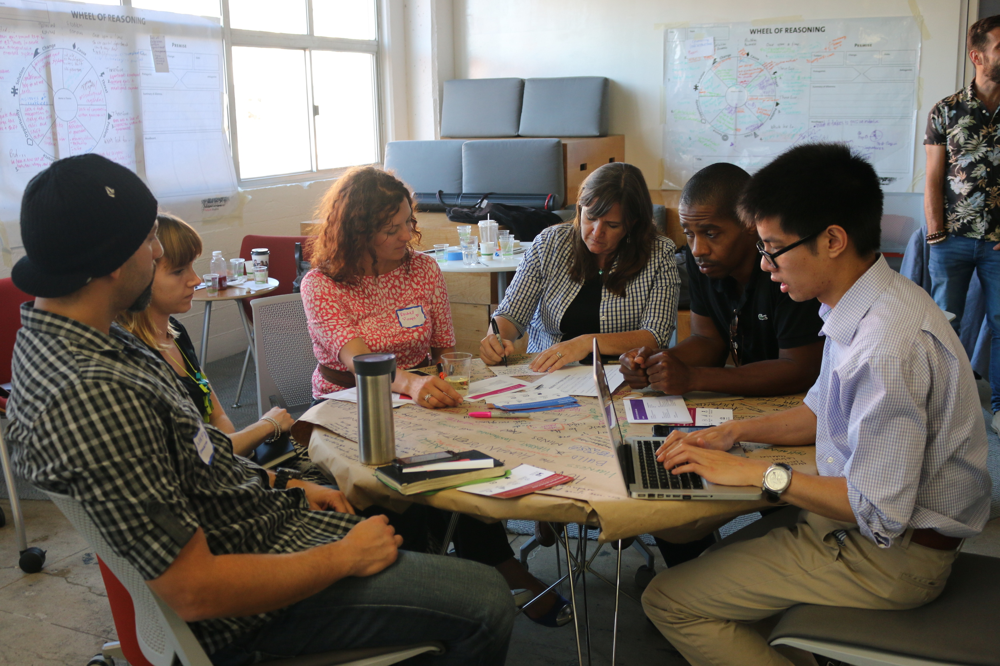

Wir wollen einen einzigartigen Ort für Kreative, Entwicklerinnen und Tech-Initiativen schaffen, um zusammen mit der Verwaltung, Wissenschaft und Unternehmen zukunftsweisend zusammenzuarbeiten.
Die Vision
Im city_lab Berlin erhalten Berliner*innen, Initiativen und die Stadtverwaltung einen Ort, an dem sie gemeinsam Visionen für ihre digitale Stadt von morgen entwerfen, testen und weiterentwickeln können. Das citylab ist konzipiert als Ort für Begegnung und Austausch, als Experimentierfläche, und Veranstaltungs- und Wissenstation. Es steht als zentrale Anlaufstelle den relevanten Akteuren der Civic Tech Technologie, die Demokratie und Gemeinwohl verpflichtet sind, für einen kollaborativen Austausch offen. Die Vorteile der Digitalisierung für die Stadtgesellschaft werden nutzbar, die Herausforderungen und Risiken der neuen Technologien werden gemeinsam gemeistert und die Stadt somit zu einer echten „Smart City“ mit praxistauglichen und bedarfsnahen Lösungen. Das citylab ist Vordenker, Labor und Entwicklungsstandort für Berlin und andere Städte.
Internationale Beispiele
Während in Deutschland das Konzept von citylab noch neu ist, gibt es international bereits einige erfolgreiche Beispiele wie die Civic Hall in New York, das Urban i-Lab in Barcelona, das 1991 civic tech center in Kiew oder das iTaiwan in Kaohsiung. Wie so eine „public-civic-partnerschaft“ aussehen kann, lässt sich bereits in der belgischen Stadt Gent untersuchen, wo kreative und demokratische Methoden der Zusammenarbeit erprobt werden. 
Die Civic Hall in New York
Für Berlin besteht genau heute die einmalige Chance, frühzeitig eine Vorreiterrolle in Europa einzunehmen. Berlin ist bereits ein Knotenpunkt der digitalen Szene und wirkt darüber hinaus anziehend auf innovative Start-ups. Mit ausreichend Raum und anschlussfähigen Konzepten wird sich diese Magnetwirkung verstärken und kann nachhaltig zusammen mit Berlin und dem Bezirk Tempelhof-Schöneberg gestaltet werden.In Berlin sind ca. 50 Unternehmen der Civic-Tech-Branche ansässig, deren Potential zur Erneuerung von in die Tage gekommenen Verwaltungsstrukturen sich bisher nur ansatzweise entfalten kann. Eine gezielte Förderung und Bündelung dieser Potentiale würde Berlins derzeitige Strategie zur Digitalisierung ergänzen und in Koalitionsverträgen niedergeschriebene Beteiligungsbestrebungen konsequent ernst nehmen. Bei den in Berlin ansässigen Civic-Tech-Unternehmen vereinigen sich unternehmerisches Können mit internationaler Ingenieurskunst mit kreativen Potentialen, wie in keiner anderen deutschen oder europäischen Stadt.
Tempelhof - H2rund als Standort der Zukunft

Das Bauteil H2rund im Flughafen Tempelhof ist idealer Ankerpunkt für das city_lab zur digitalen Erneuerung Berlins, ein Leuchtturmprojekt für Deutschland und Europa. Der ehemalige Flughafen Tempelhof verfügt über ausreichend Platz, um vielfältige Organisationen, Betriebe, Werkstätten, Start-ups und Initiativen anzusiedeln und um die Atmosphäre herzustellen, die für die Zukunft der Stadtgesellschaft von Nöten ist. Gemeinsam mit dem Bezirk Tempelhof-Schöneberg, der selbst über eine bewegte Geschichte von Umwälzung und Erneuerung verfügt, ist es ein idealer Ort, um Altes und Neues zu vereinen und soziale Teilhabe und technische Innovation zu ermöglichen.
Kontakt
Ihr wollt Teil des Kollektivs werden oder habt Fragen? Schreibt uns einfach eine Mail an info@citylab.berlin
Impressum
Koordinator und verantwortlich für den Inhalt dieser Webseite:
Open Knowledge Foundation Deutschland e.V.
Singerstr. 109
10179 Berlin
Deutschland
E-Mail: info@citylab.berlin
Telefon: +49 (0)30 577 03 66 60
Mobil +49 157 384 748 40
Für den Inhalt externer Links übernehmen wir keine Verantwortung.
Datenschutzerklärung